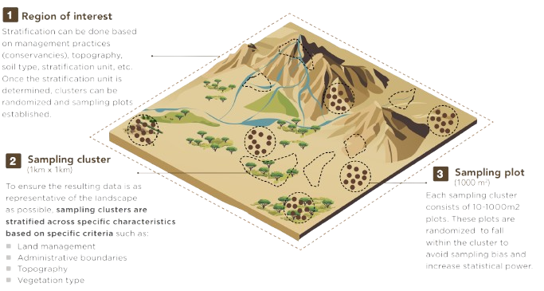
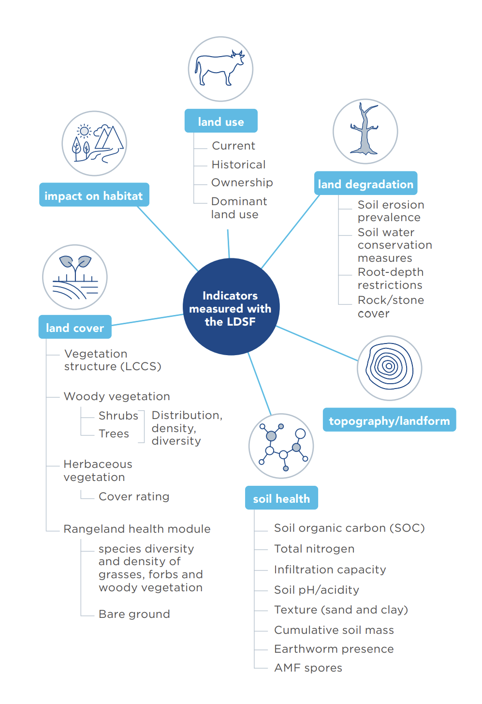
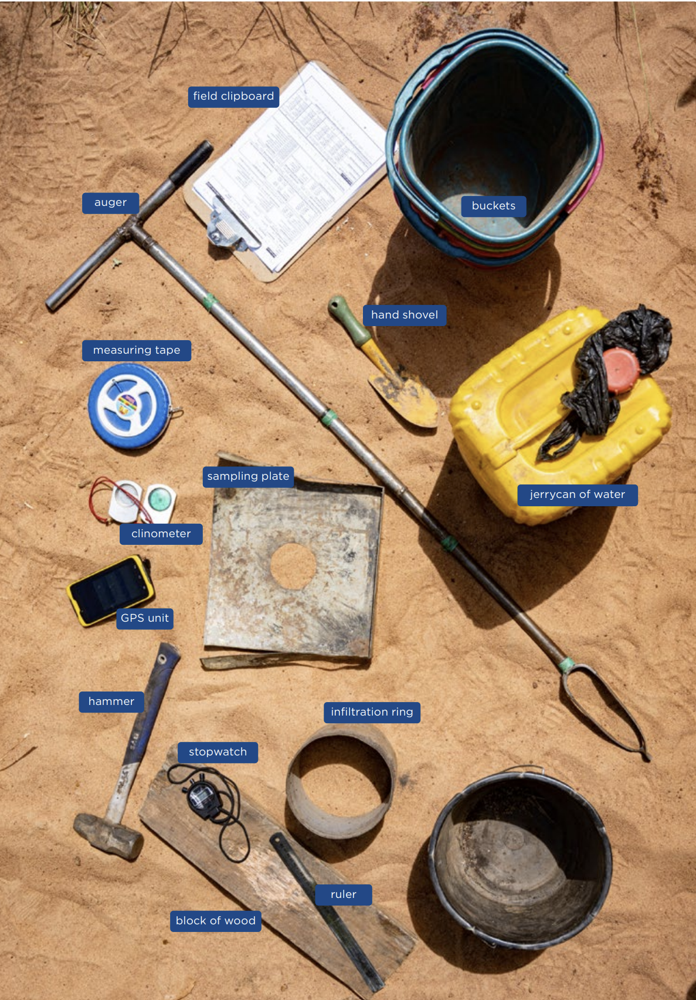
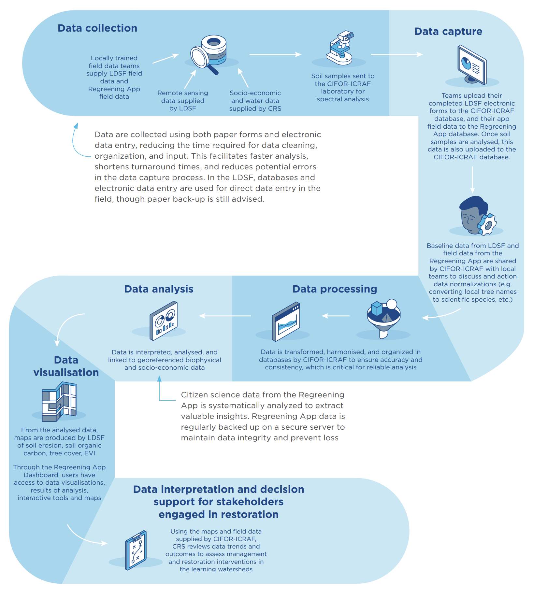
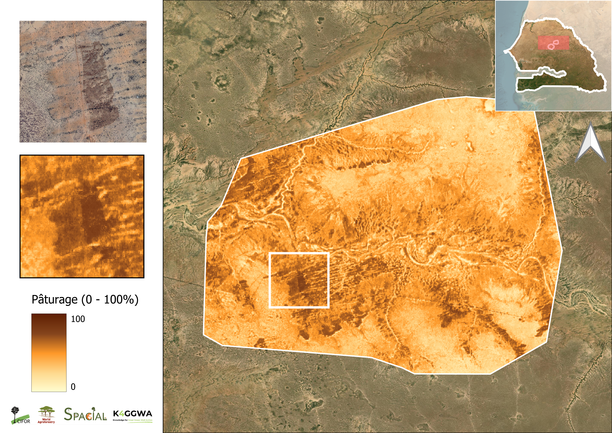
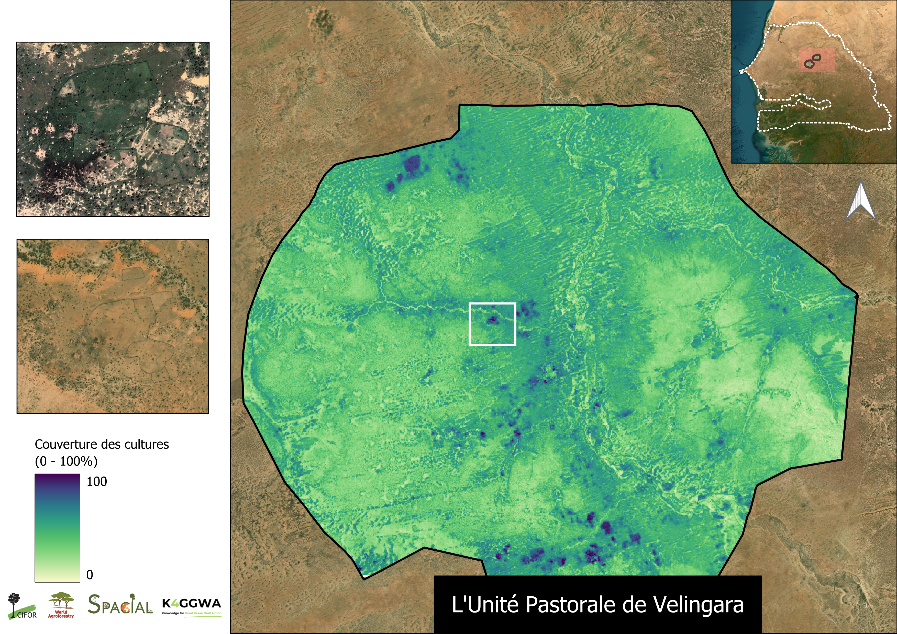

LDSF: Mapping Land Health in the Ferlo Region
LDSF and Regreening App Training - Linguère, Senegal (Aug 2025)
senegal
ldsf
data collection
land health
Field deployment of the Land Degradation Surveillance Framework (LDSF) in the Ferlo region of Senegal, piloting the new Rangeland Module to track forage, grazing pressure, and recovery.
K4GGWA • Senegal • Field deployment
Mapping Land Health in the Ferlo Region
LDSF and Regreening App Training - Linguère, Senegal (Aug 2025)
Following the August 2025 training workshop in Linguère, field teams from CIFOR-ICRAF, AVSF, and local partners initiated a new phase of LDSF surveys in the Ferlo region - focusing on Younofere and Mboula.
Key takeaways
- LDSF provides a repeatable baseline for soil and vegetation condition across pastoral landscapes.
- Field observations + satellite covariates enable high-resolution predictive maps for planning and reporting.
- The 2025 campaign pilots the new Rangeland Module to track forage, grazing pressure, and recovery.
What is the LDSF?
The Land Degradation Surveillance Framework is a multi-scale, systematic sampling design used to assess land and soil health across diverse landscapes. It combines hierarchical sampling, structured field protocols, and geospatial modelling to generate a detailed picture of ecosystem condition.
The LDSF’s nested sampling design ensures spatial variability is captured at various scales:
- A 10 × 10 km sampling frame (called a “site”) with 16 1km x 1km clusters;
- Each 1km x 1km cluster contains 10 randomly generated 1000m2 plots;
- Each 1000m2 plot is then split into four subplots of approximately 12m diameter.

This design ensures that measurements are representative of the full range of land conditions, repeatable for long-term monitoring, and provide a robust dataset for model training.


LDSF indicators and tools required
At each plot, field teams collect observations on:
- Soil properties and visible soil degradation;
- Vegetation structure and cover;
- Erosion types and severity;
- Ground cover composition;
- Land use and management indicators.
Combined, these provide a robust baseline of land health that can be used as model inputs to generate predictive surfaces of many different land health indicators.
From field plots to predictive maps
Data collected through the LDSF provide a robust input for hgih-accuracy predictive modeling. Each measured variable can be used to train machine-learning algorithms, typically random forests or boosted regression trees using geospatial covariates such as Sentinel-2 spectral indices, elevation, rainfall, and temperature.

From raw data to decision-making, a schematic workflowThis process transforms thousands of point observations into continuous maps of soil and vegetation health, enabling:
- Targeting of restoration investments;
- Tracking of restoration outcomes over time;
- Reporting on SDG 15.3 (“land degradation neutrality”) and other global indicators.


Example LDSF derived predictive maps. LHS: Grassland cover (0–100%); RHS: Cropland cover (0–100%).
The resulting high-resolution maps are integrated into decision-support tools such as the K4GGWA Platform and shared with national agencies through the Great Green Wall Observatory, where they can inform policy, restoration planning, and community engagement.
Piloting the LDSF Rangeland Module
A key innovation in the 2025 Matam & Louga campaign is the LDSF Rangeland Module, a new LDSF module with specific indicators for understanding the condition and function of pastoral systems.
New measurements include:
- Ground cover composition (perennial grasses, annual herbs, litter, bare soil);
- Herbaceous biomass and forage quality;
- Woody–herbaceous balance;
- Livestock-use indicators such as trampling, dung density, browse lines, and bare-patch formation.
These variables provide a clearer picture of forage availability, grazing impacts, and ecosystem function - issues central to communities across Senegal’s Ferlo region and pastoral systems across the GGW.
The expanded indicators allow LDSF clusters to represent not only vegetation structure and soil condition, but the functionality of rangeland systems including how they accumulate biomass, recover after grazing, and respond to rainfall variability.
Collaborative science in action
The 2025 field campaign was implemented jointly by local technicians and institutions, combining scientific rigour with on-the-ground capacity building.
Teams received practical coaching on:
- Soil sampling and laboratory preparation;
- Vegetation assessment and rangeland condition scoring;
- GPS navigation and Open Data Kit (ODK) workflows;
- Data quality assurance and basic exploratory analysis.
This dual approach ensures that data collection skills remain within national systems, strengthening long-term monitoring capacities across the Sahel.
Beyond its technical output, the campaign demonstrates that building credible restoration evidence requires collaboration between scientists, governments, and communities. The LDSF’s structured design provides a scientific backbone and local knowledge and participation ensure datasets and monitoring frameworks are inclusive.
What next?
Data collected during the recent Ferlo region LDSF surveys are being cleaned and processed, readying them for analysis and modeling. They will contribute to the first rangeland-specific predictive models for the Great Green Wall. These products will enable countries to visualise trends in forage quality, erosion risk, and soil carbon at scales relevant for planning.
The next phase will expand the network of LDSF sites across the GGW region, deepening the evidence base needed for adaptive management of drylands and providing a stronger foundation for restoration commitments under the Great Green Wall and related initiatives.
For further inquiries, contact us:
T.VAGEN@cifor-icraf.org
or
m.ahmad@cifor-icraf.org
Learn more

Predictive Modeling for Restoration
Guide
Explore how predictive maps are generated, from raw data collection in the field, to analytics and outputs.

Regreening App
Mobile Application
Learn more about the features of this citizen-science data-collection tool for restoration project monitoring.

Land Degradation Surveillance Framework (LDSF)
Data sampling
Learn more about the Land Degradation Surveillance Framework - the sampling protocol behind the world's largest systematic, georeferenced library of soil infrared spectra.